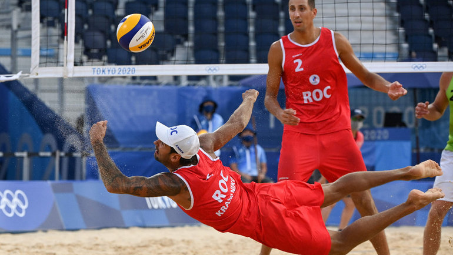
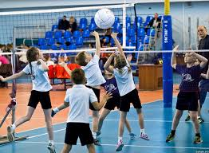
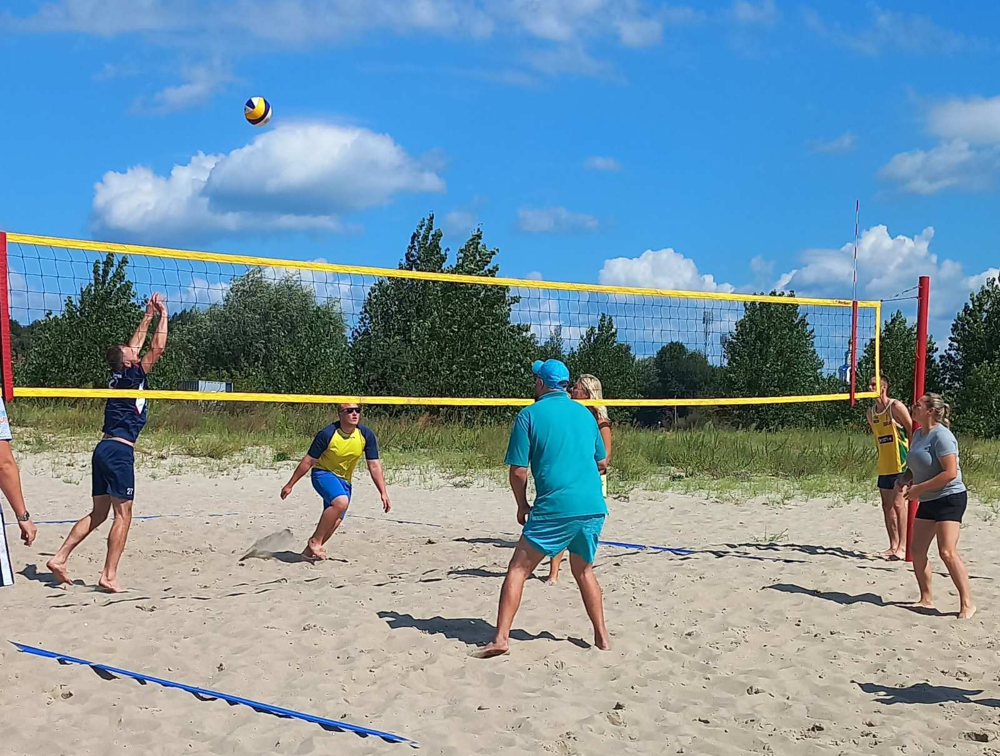
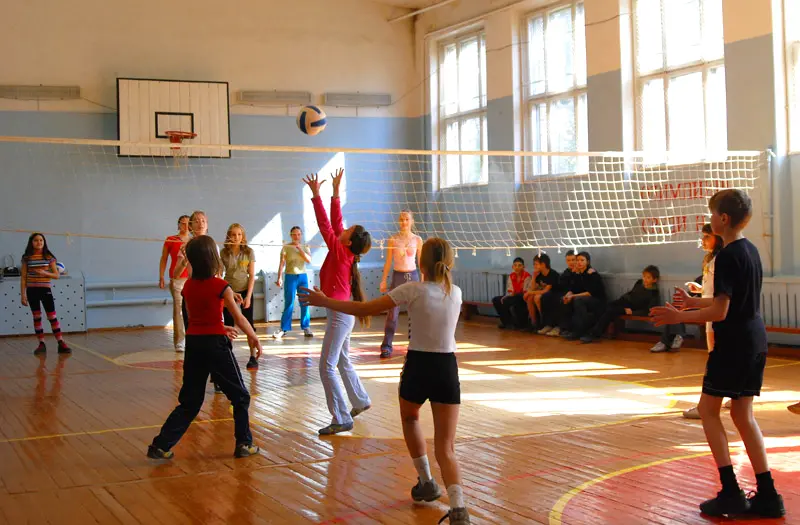
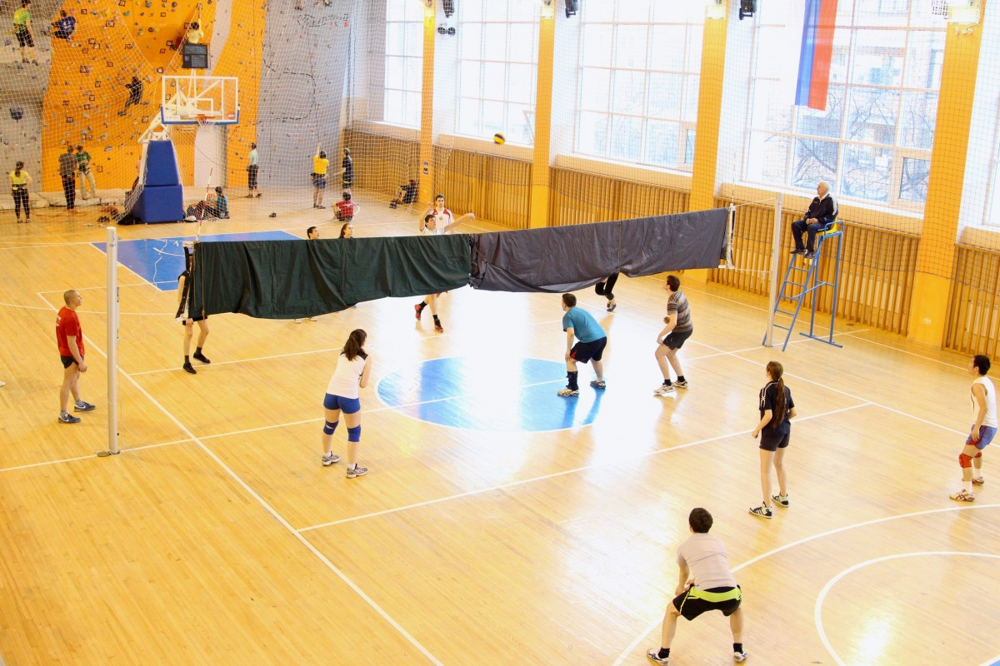

Интересные факты о волейболе
Существует множество видов волейбола: пляжный, мини-волейбол, парковый, пионербол, кертнбол
1.Пляжный
Пляжный волейбол (бич-волей) — это динамичный и зрелищный вид спорта, который зародился в США в 1920-х годах и с 1996 года входит в программу Олимпийских игр. В отличие от классического волейбола, здесь играют на песчаной площадке размером 16 × 8 метров, покрытой слоем песка не менее 40 см. Сетка натягивается на высоте 2,43 м для мужчин и 2,24 м для женщин. Мяч чуть больше и мягче, чем в классическом волейболе, что облегчает контроль на песке

2 Мини-волейбол
Мини-волейбол — это упрощённая версия классического волейбола, созданная специально для детей, подростков, а также для семейного и массового досуга. Этот вид спорта появился в Японии в 1972 году на острове Хоккайдо и быстро завоевал популярность благодаря своей доступности, простым правилам и возможности играть людям любого возраста и уровня подготовки.

3 Парковый
Парковый волейбол — это разновидность волейбола, которая адаптирована для игры на открытых площадках, в парках, на пляжах и в других местах массового отдыха. Он был официально признан и стандартизирован в 1998 году и с тех пор стал популярным как среди любителей, так и в рамках корпоративных и любительских турниров

4 Пионербол
Пионербол — это популярная командная игра с мячом, которая зародилась в СССР в 1930-х годах и предназначалась для детей школьного возраста. Она часто используется на уроках физкультуры и в летних лагерях как подготовка к волейболу. Игра проста в освоении и не требует сложного инвентаря, что делает её доступной для всех

5 Кертнбол
Кертнбол — это необычная разновидность волейбола, в которой вместо привычной сетки используется плотная ткань, полностью закрывающая обзор соперников друг от друга. Благодаря этому игроки не видят, что происходит на противоположной стороне площадки, и вынуждены ориентироваться только на слух и интуицию.
